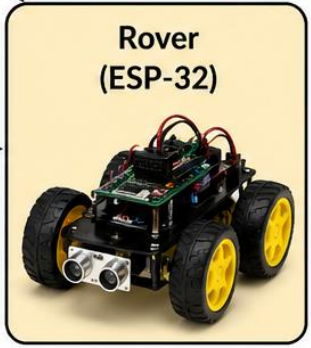

The Rover

Our demo involves using gestures recognized over the AUP-ZU3 system to send commands to the Rubik PI external SoC. This SoC then manages remote control of the rover allowing the user to drive it around using only simple hand gestures. When no gesture is made or detected, the rover defaults to a stopping and idling until a new gesture is made. With a gesture processing rate of around 5+ FPS, their exists only 200ms of latency between a gesture being made and the rover responding.
Demo in Action